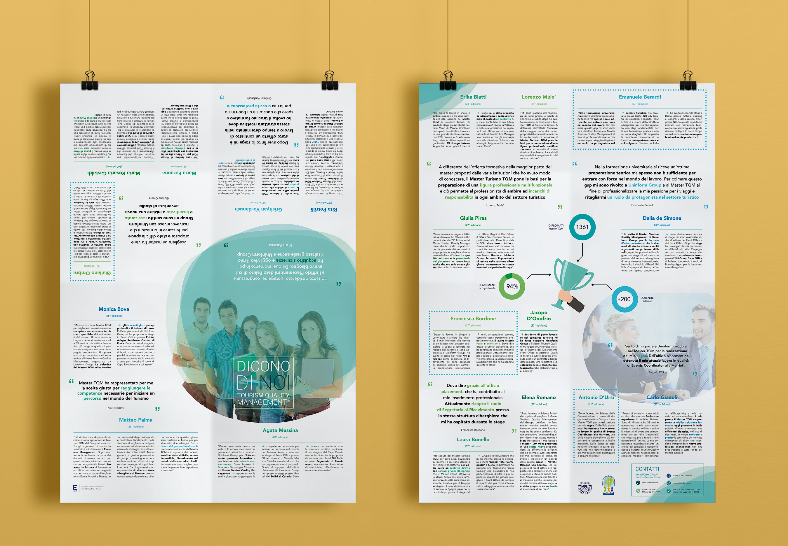

Client project of a brochure for TQM's master in tourism

|
An informative brochure I've made this brochure in collaboration with copyrighters and marketing advisors of the agency Efficere.uno. We've designed and delivered this product for two consecutive years, which they used in their branches in Rome and Milan, as well as restyling their logo. |

|
Visual features This brochure appeals to potential applicants by showing the benefits of undertaking the masters with a long description of their program, each divided visually by its own patterns and colors. |

|
Poster design Last but not least, I've designed a poster insert for each brochure containing a great number of reviews from past applicants. This poster had two versions, one designed to be folded (image below), while the other designed to be put on the schools walls . |
|  |
This is the insert for the brochure, keeping the same style of the brochure. In addition, all the steps to join the program are included, making it a standalone marketing product. |
An informative brochure
I've made this brochure in collaboration with copyrighters and marketing advisors of the agency Efficere.uno. We've designed and delivered this product for two consecutive years, which they used in their branches in Rome and Milan, as well as restyling their logo.
Visual features
This brochure appeals to potential applicants by showing the benefits of undertaking the masters with a long description of their program, each divided visually by its own patterns and colors.
Poster design
Last but not least, I've designed a poster insert for each brochure containing many reviews from past students of this master. This poster had two versions, one designed to be folded (image below) and another to be hang on the school's walls.
This is the insert for the brochure, keeping the same style of the brochure. In addition, all the steps to join the program are included, making it a standalone marketing product.